The engine so far: rocket, CAD, stress and plume
Updated 19 October 2026 with the finished 3D FEA of the assembled engine and the whole rocket built around the frozen engine CAD. The engine and plume renders below are from 13 October. Each image says what kind of evidence it is.
The whole rocket
The frozen engine, placed at its gimbal station inside the reference airframe that the flight simulations use. The airframe, fins, legs and bays are placeholders until Lauty designs them. The N2O tank is a concept, not CAD yet. Both images use the same camera and scale.
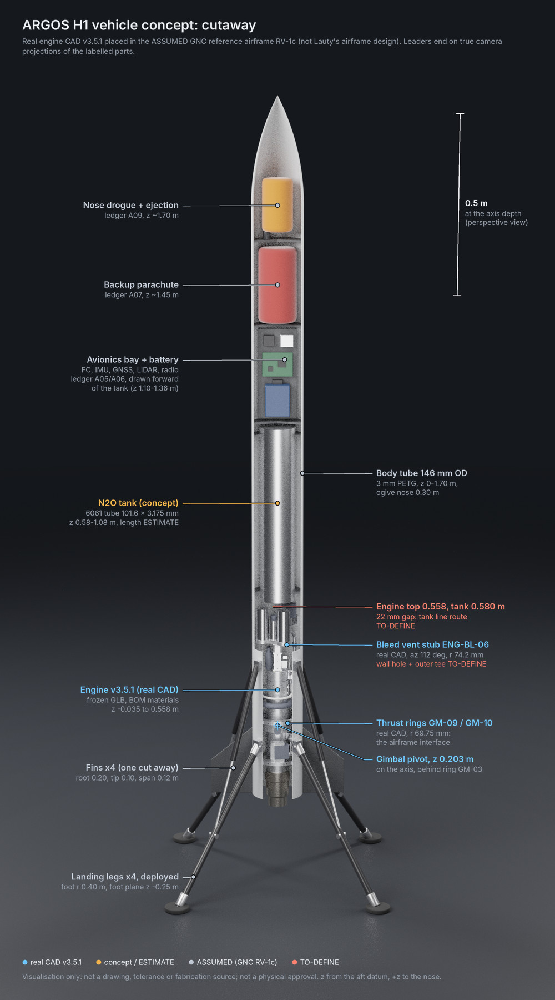
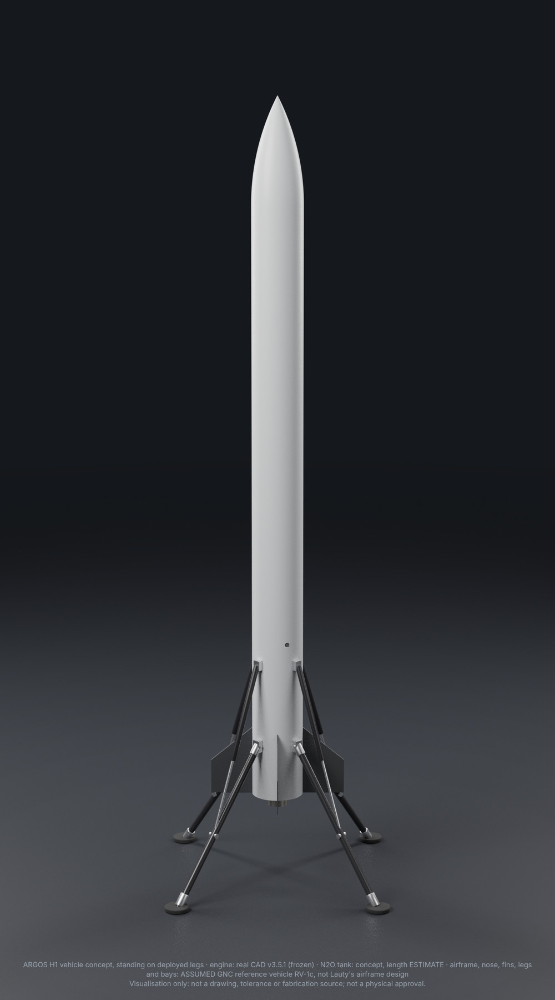
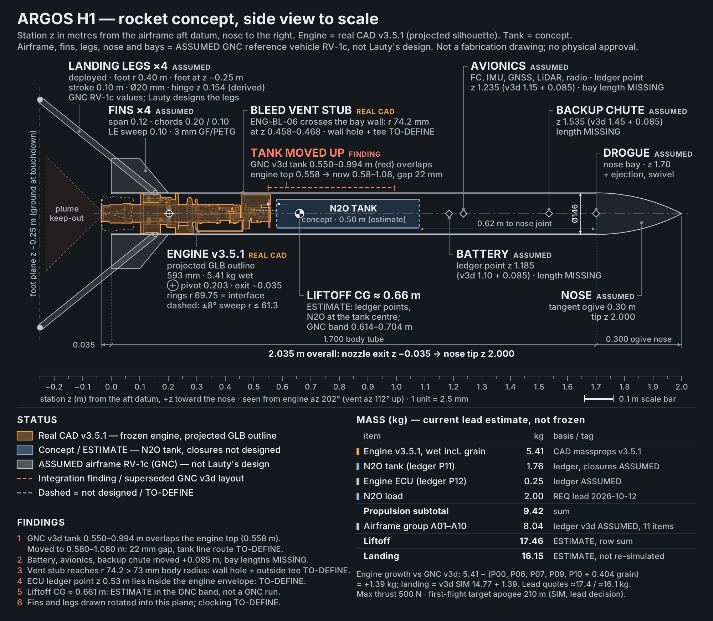
What placing the engine showed
- The flight simulations' layout put the tank bottom at 0.55 m, but the engine top is at 0.558 m. The tank moves up to 0.58–1.08 m, leaving a 22 mm gap for the tank line, and the bays above it shift forward. Everything still fits.
- The bleed vent stub sticks 1.2 mm out through the body wall, 0.46 m up, so the airframe needs a hole and an outside fitting there.
- The landing estimate (16.15 kg) is just above the 16.0 kg the landing simulations covered, so the landing has to be re-run at this mass.
Rockets that have landed like this
- Colibri (EPFL students, 2024): N2O/IPA liquid, throttled and gimballed, about 100 kg. Free flight to 105 m and back to the pad.
- Scout F (BPS.space, 2022): a model rocket that landed on a separate descent motor and legs. No tether is mentioned, but that is inferred.
- Masten Xombie (2009): liquid LOX/alcohol, free flights between pads, and an in-flight relight in 2010.
- AEL Gyroc (UK, about 25 kg wet, N2O/IPA, 300 N): closest in size, but only tethered hovers are published.
- ARRC HTTP-3AT (Taiwan, 2020): the only hybrid hoppers found, tethered hovers only.
None of them combines a hybrid, a throttle, a gimbal and a free landing after a coast and relight. The search was not exhaustive, so this is not a claim of originality.
Engine assembly
The engine module as modelled today: chamber and nozzle, pintle throttle, main valve, torch igniter, feed hose, and the two-axis gimbal with its thrust rings. Nozzle points down and the gimbal is centred.
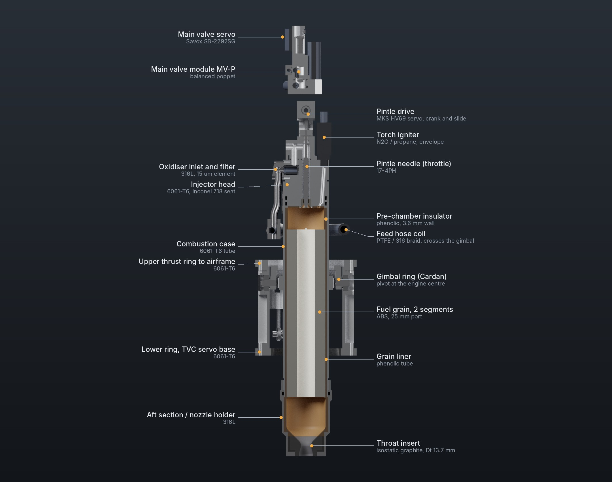
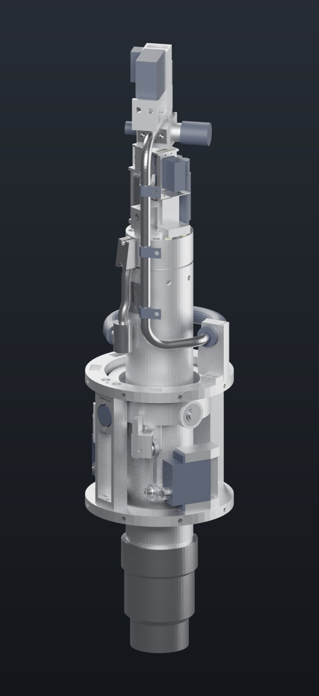
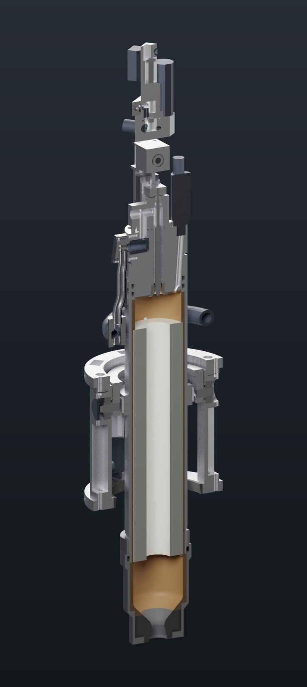
- Model
- CAD v3.4.1, neutral pose
- Parts
- 95 BOM lines, 134 instances
- Envelope
- Ø 139.5 mm over the thrust rings, 593 mm long
- Mass in CAD
- 4.39 kg (no tank, no purge line yet)
- Fuel grain
- 2 × ABS, Ø 53.5 × 115 mm, 25 mm port
- Nozzle
- throat 13.72 mm, exit 19.41 mm, ε 2
Colour key
The flame at 500 N
The exhaust leaves the nozzle under-expanded (exit pressure 3.2 times ambient), forms a small Mach disk, then a train of shock diamonds. The CFD is at the first design point (chamber 25 bar, O/F 7.76). The current rated point is O/F 10.4, which has only been run on the coarse grid so far.

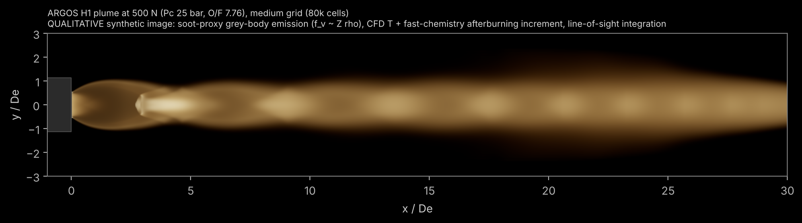


The engine under maximum load
The whole engine was meshed as one assembly (CalculiX, about 171,000 nodes) and loaded with maximum thrust and its heat, a pressure spike at ignition, the gimbal held at its 8° stop, the servos at stall, and touchdown. Six parts fall below the required margin and go to the Mechanical team as design changes. The rest of the engine passes.
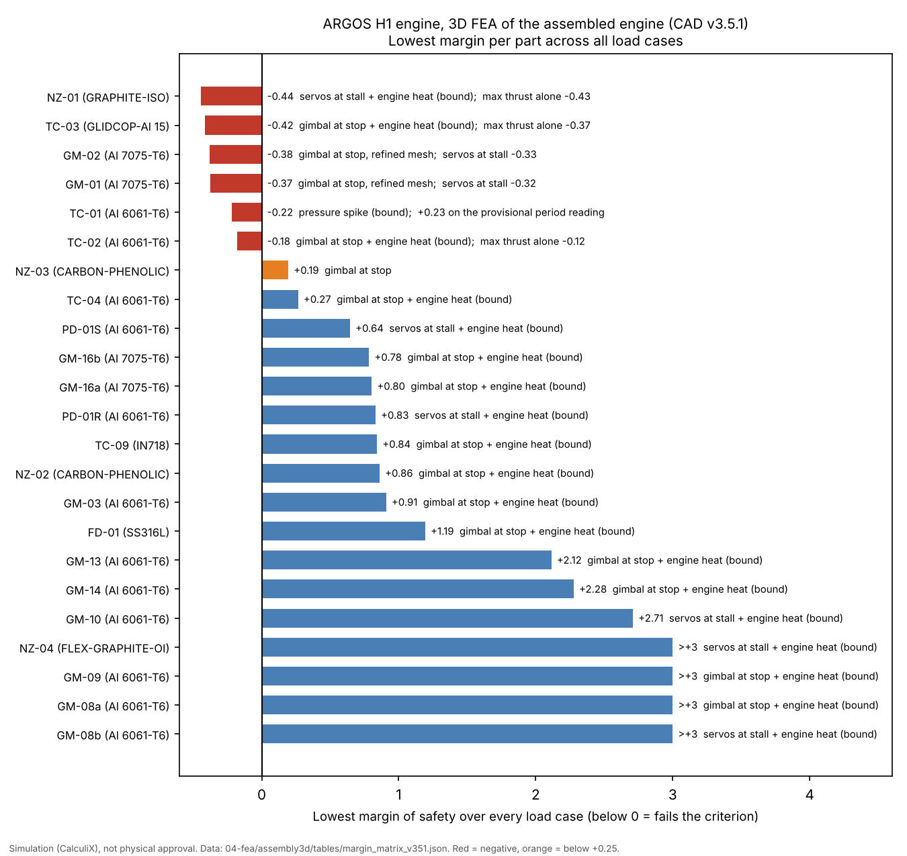
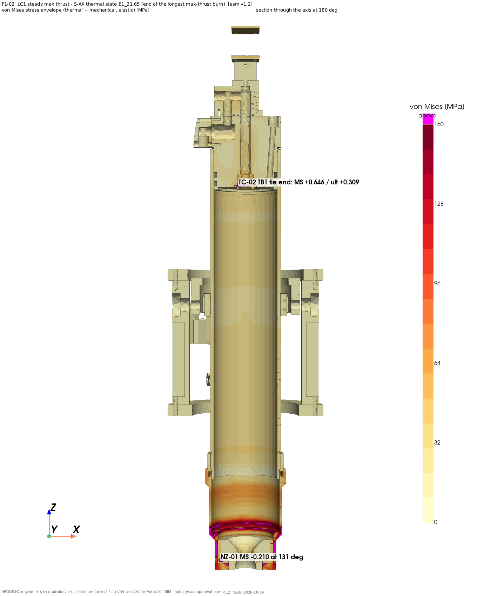
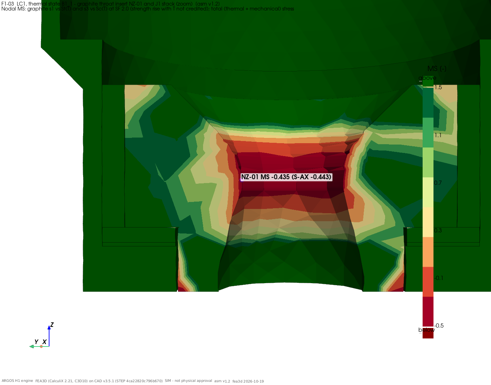
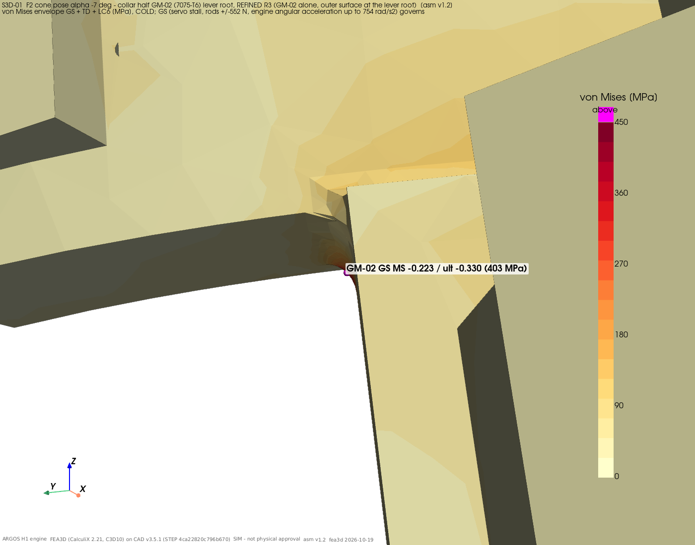
Landing simulation
Where 500 simulated flights touch down against the landing limits (dashed lines). This plot is the 12 October baseline at 98.4 %. Today's runs with the decided flight rules land between 98.4 % and 99.4 % depending on the mission profile.
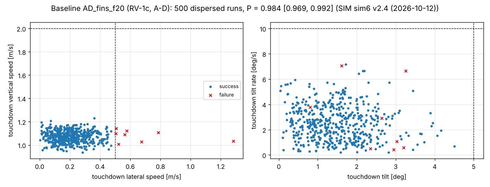
Not in these images yet
- Close-up renders of the frozen v3.5.1 engine with its bleed valves. The engine section above still shows v3.4.1; v3.5.1 appears only in the rocket views.
- The N2O tank as real CAD, and Lauty's actual airframe.